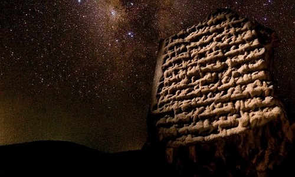
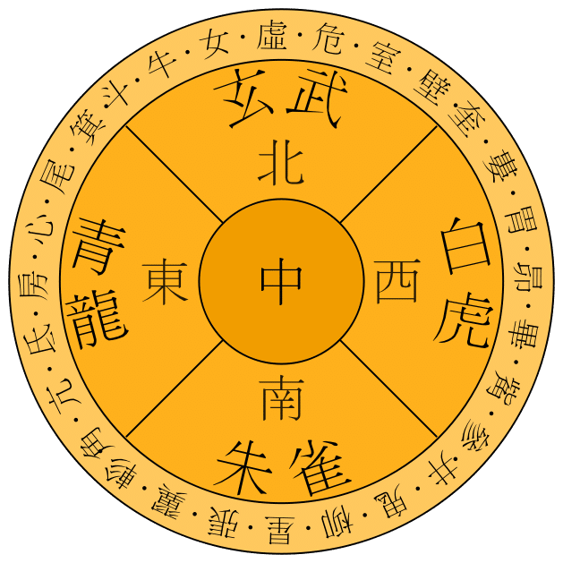

La astronomía surge desde que la humanidad dejó de ser nómada y se empezó a convertir en sedentaria; luego de formar civilizaciones o comunidades empezó su interés por los astros. Desde tiempos inmemorables se ha visto interesado en los mismos. Estos han enseñado ciclos constantes e inmutabilidad durante el corto periodo de la vida del ser humano, lo que fue una herramienta útil para determinar los periodos de abundancia para la caza y la recolección o de aquellos como el invierno en que se requería de una preparación para sobrevivir a los cambios climáticos adversos. La práctica de estas observaciones es tan cierta y universal que se han encontrado a lo largo y ancho del planeta en todas aquellas partes en donde han habitado los seres humanos. Se deduce entonces que la astronomía es probablemente uno de los oficios más antiguos, manifestándose en todas las culturas humanas.
La historia de la astronomía se remonta a las civilizaciones antiguas, donde la observación del cielo nocturno atraía el interés de los científicos de la época. Los primeros registros de observaciones astronómicas datan de hace miles de años y se encuentran en diversas culturas, entre ellas, la egipcia, la babilónica y la china.
La astronomía antigua se caracterizaba por la observación de los movimientos en el cielo y la identificación de patrones recurrentes, como las fases lunares y las posiciones de los planetas. Estas observaciones eran utilizadas para el desarrollo de calendarios y la predicción de eventos astronómicos.
La esfera armilar, modelo reducido del cosmos desde la perspectiva terrestre, es un instrumento astronómico utilizado en la Antigüedad y en la Edad Media para la determinación de la posición de los cuerpos celestes. Fue inventado de manera independiente en la Antigua Grecia y la Antigua China, aunque se desconocen sus autores específicos.
Algunas esferas armilares incluyen anillos para situar en el cielo la Luna y los distintos planetas, lo cual puede hacer excesivamente complejo el sistema.
En la historia de la astronomía, la astronomía pretelescópica se refiere a las observaciones, instrumentos, teorías y conceptos astronómicos desarrollados en las distintas civilizaciones durante el período histórico que precede a la aparición y uso del telescopio refractor. Los telescopios refractores cohabitaron con las últimas observaciones pretelescópicas. Fueron rápidamente utilizados a gran escala por los observadores, como Galileo Galilei en 1609 con su perspicillum apuntando hacia el cielo
La astronomía babilónica designa las teorías y métodos astronómicos desarrollados en la antigua Mesopotamia, región situada entre los ríos Tigris y Éufrates (en el actual Irak) y donde se desarrollaron algunas de las civilizaciones precursoras de la astronomía occidental. Entre estas civilizaciones se destacan los sumerios, los acadios, los babilonios y los caldeos. La astronomía babilónica cimentó las bases de la astronomía de civilizaciones posteriores como la griega, la hindú, la de los sasánidas, la del imperio bizantino y la de los sirios así como la astronomía medieval musulmana y europea.
Para los egipcios de la Antigüedad,el aspecto del cielo siempre revistió una significación mitológica y religiosa; sin embargo, las observaciones astronómicas no tenían una finalidad astrológica tan pronunciada en la civilización egipcia como en Mesopotamia.
La astronomía griega recibió importantes influencias de otras civilizaciones de la Antigüedad, principalmente de la babilónica. Inicialmente, en la época arcaica, el interés de los griegos por los astros se debía a su utilidad para la orientación durante la navegación o para establecer pautas cronológicas. Posteriormente, a partir siglo iv a. C., los astrónomos se centraron en tratar de explicar matemáticamente los movimientos de los planetas, del sol y la luna, sobre lo que surgieron diversas teorías. Por otra parte, también realizaron catálogos de las constelaciones, cuyas formas asociaron a objetos y seres míticos. Durante la época helenística y el imperio romano, muchos astrónomos trabajaron en el estudio de las tradiciones astronómicas clásicas, en la Biblioteca de Alejandría y en el Museion.
La astronomía china es considerada más antigua que la desarrollada en la antigua Europa y el Oriente Próximo, aunque es poco lo que se conoce sobre ella, y ha evolucionado de manera independiente . Los expertos consideran que los chinos eran los observadores de fenómenos celestes más perseverantes y precisos de todo el mundo, incluso antes de los estudios astronómicos de los árabes medievales.
La astronomía india se refiere a la astronomía practicada en el subcontinente indio. Tiene una larga historia que se extiende desde la prehistoria hasta la época moderna. Algunas de las primeras raíces de la astronomía india pueden fecharse en el período de la civilización del valle del Indo.
La astronomía maya es el estudio de la Luna, los planetas, la Vía Láctea, el Sol y los fenómenos astronómicos por parte de la Civilización Maya Precolombina de Mesoamérica. La observación de los astros era de vital importancia para el desarrollo de la vida material y espiritual compartida por las demás sociedades de Mesoamérica, aunque posee ciertas características que la hacen única. Una de ellas, la más representativa, es el empleo del calendario de Cuenta Larga, por el que los mayas del período clásico pudieron hacer estimaciones de más largo plazo. En este Período Clásico, los Mayas desarrollaron una de las astronomías pre-telescopio más precisas del mundo.
La astronomía aborigen australiana es la parte de la cultura aborigen australiana relacionada con los hechos astronómicos, como el Sol y la Luna, las Estrellas, los planetas, y la Vía Láctea, y sus movimientos en el firmamento. Dado que la cultura aborigen australiana es la más antigua de las civilizaciones aún continuadas, se ha dicho que los aborígenes australianos bien podrían haber sido los primeros astrónomos de la historia.